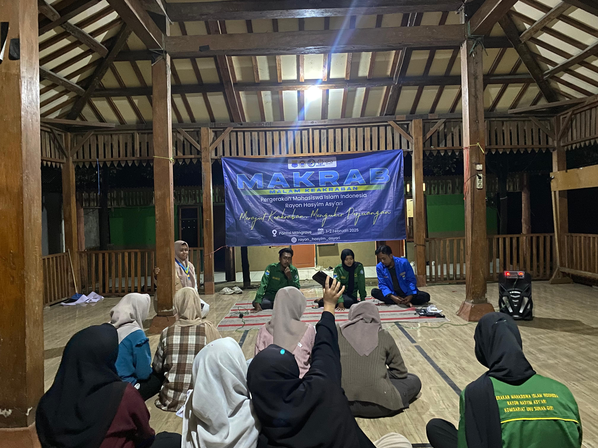
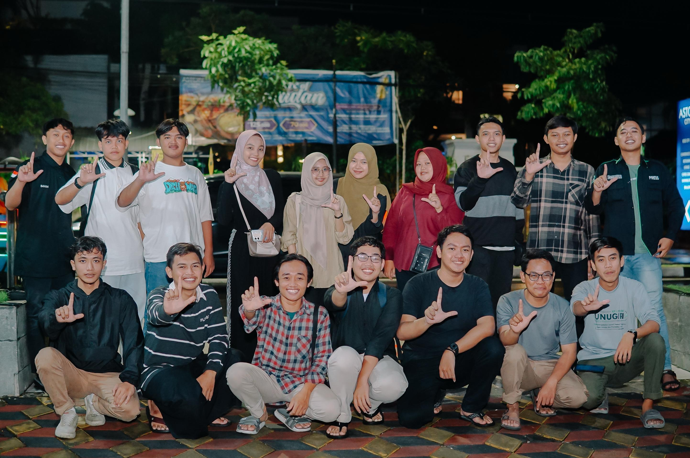
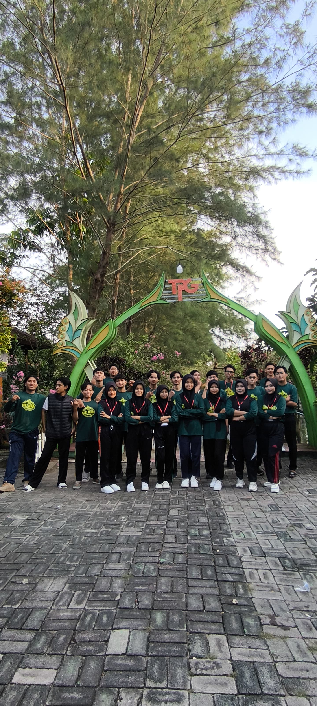

Halo, Saya Moch Nursyarif Hidayatul Akbar
Seorang WEB DEVELOPMENT
Tentang Saya
Halo! nama saya Moch Nursyarif Hidayatul Akbar, umur saya 19 tahun. Saya tinggal di Desa Suciharjo, Kecamatan Parengan, Kabupaten Tuban.
Sekarang saya sedang melanjutkan studi di Universitas Nahdlatul Ulama Sunan Giri Bojonegoro, dan sedang belajar membuat website data diri.

Portofolio
| 1 | Mapaba | Desember 2024 |  |
| 2 | Hunting | Maret 2025 |  |
| 3 | IT camp | November |  |